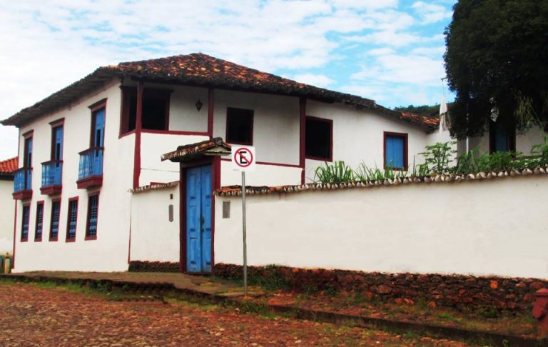

Sabará possui alguns trechos históricos preservados, especialmente no centro da cidade. Na Rua Pedro II, antiga Rua Direita, encontram-se alguns casarões, especialmente do século XVIII e XIX. A mais importante rua da antiga Vila tem seu conjunto arquitetônico tombado pelo Instituto do Patrimônio Histórico e Artístico Nacional (IPHAN).[12] Destaca-se o Solar do Padre Correa ou de Jacinto Dias construído em 1773, que possui escadarias de madeira de jacarandá e talha da terceira fase do Barroco Mineiro, onde funciona hoje a prefeitura. Ali já se hospedaram figuras ilustres como dom Pedro I e dom Pedro II. Seu antigo proprietário, o padre José Correa da Silva, era suspeito de ser inconfidente e assim, provavelmente, as paredes dessa casa devem ter escutado muito xingamento contra a Coroa e o governador Cunha Menezes; o Fanfarrão Minésio ridicularizado nas Cartas Chilenas de Tomas Antônio Gonzaga.
 Outra construção do século XVIII é a chamada Casa Azul, onde nos dias de hoje funciona uma repartição pública federal. Tem ainda outra atração que é a chamada Casa Borba Gato. O nome é um chamariz turístico tomado da rua onde o casarão está situado; ao contrário do que este sugere, o famoso desbravador do Sabarabuçu nunca morou ali. Trata-se da antiga Rua da Cadeia que foi rebatizada com o nome do bandeirante em 1911. A casa, construída pela família Guimarães em 1814, já foi hotel, escola, casa de padre e, hoje, é uma instituição do Instituto do Patrimônio Histórico e Artístico Nacional voltada para a preservação do patrimônio histórico da cidade.
Outra construção do século XVIII é a chamada Casa Azul, onde nos dias de hoje funciona uma repartição pública federal. Tem ainda outra atração que é a chamada Casa Borba Gato. O nome é um chamariz turístico tomado da rua onde o casarão está situado; ao contrário do que este sugere, o famoso desbravador do Sabarabuçu nunca morou ali. Trata-se da antiga Rua da Cadeia que foi rebatizada com o nome do bandeirante em 1911. A casa, construída pela família Guimarães em 1814, já foi hotel, escola, casa de padre e, hoje, é uma instituição do Instituto do Patrimônio Histórico e Artístico Nacional voltada para a preservação do patrimônio histórico da cidade.
Há, entre outros, também, a antiga casa de Câmara e Cadeia do século XIX. Localizada próxima ao chafariz do Kaquende, preserva suas características arquitetônicas e abriga hoje a biblioteca pública municipal em seu andar superior.[12] Sua visitação é aberta durante o horário de funcionamento da biblioteca.
Sabará possui ainda muitos antigos chafarizes, sendo os mais conhecidos o do Kaquende, construído em 1757 na Rua São Pedro no antigo centro comercial da cidade, o do Rosário, instalado ao lado da igreja de mesmo nome na Praça Melo Viana, e o da Corte Real.
Algumas da Igrejas da cidade de Sabará
Sabará possui um dos mais notáveis acervos de igrejas setecentistas de Minas:
- Nossa Senhora do Ó de 1717, uma das mais representativas do barroco mineiro, possui influência chinesa em sua arquitetura externa e na decoração interna, o seu nome é devido às ladainhas de Nossa Senhora que sempre começam com o Ó e seguem com algum louvor ou agradecimento;
- Nossa Senhora da Conceição de 1710, matriz da cidade, localizada na praça Getúlio Vargas (cidade antiga);
- Nossa Senhora do Carmo de 1763, com várias obras de Aleijadinho;

- Nossa Senhora das Mercês de 1781 (na primeira imagem do artigo) dos homens pardos, com linhas arquitetônicas simples, sem ornamentações internas, mas localizada em lugar privilegiado na composição da paisagem urbana;
- Nossa Senhora do Rosário de 1713, inacabada pelos escravos da Irmandade dos Homens Negros da Barra do Sabará, os quais a construíram e pararam a partir da abolição da escravidão em 1888
- Igreja da Soledade, no distrito de Ravena, também do século XVIII. Localizada no antigo arraial da Lapa, possui registro de batismo de 1727,[12] o que indica que sua construção se deu antes dessa data. Possui inestimável tesouro barroco e foi elevada à condição de Matriz em 1855.[12] Em 2010 passou por um processo de recuperação pelo IEPHA;
- São Francisco de 1781, possui sala-consistório, sacristia na parte posterior, tribuna na capela-mór, púlpitos no arco-cruzeiro além de a maior altura da nave entre as igrejas da cidade;
O museu está instalado em uma casa do século XVII, com arquitetura do período colonial do século XVII.
O edifício já abrigou a Antiga Casa de Intendência e Fundição, onde era feita a cunhagem e a tributação do ouro, mais conhecida como a cobrança do quinto pela Coroa Portuguesa, extraído da Comarca do Rio das Velhas. Com o fim das atividades tributárias, o prédio foi a leilão, no ano de 1840, assim foi transformado em moradia, posteriormente em escola até ser adquirido pela Companhia Siderúrgica Belgo-Mineira e ser doado ao Serviço do Patrimônio Histórico e Artístico Nacional (SPHAN). Com isso, o prédio é reformado e transformado em museu no ano de 1946.
Em seu acervo constam peças e equipamentos utilizados na garimpagem e na arte de ourivesaria. O museu também guarda uma prensa, datada no ano de 1670, utilizada em casas de fundição e um engenho de triturar minério de ouro, com o qual se substituía a mão de obra escrava no oficio. Além das exposições, funciona no local uma biblioteca especializada na história de Minas Gerais e do Brasil.

Entrada: Preço do ingresso: R$ 1,00. Gratuidade para escolas públicas, moradores de Sabará, maiores de 65 anos e menores de 05 anos.
Endereço: Rua da Intendência, s/n, Centro – Sabará/MG.
Telefone: (31) 3671-1848.
Horário de Funcionamento: Terça a sexta, das 10:00 às 17:00 horas; sábado e domingo, das 12:00 às 17:00 horas.